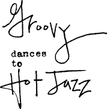

I'm G-stringed and I'm on stage
Moving my not built for bearing hips
To and fro
You know how
I'd be singing if it didn't distract
I'd sing La-Dee-Da
I was gonna go to college
But I became a dancer instead
So I could dance
But only to music that swings
The stuff my baby would like to hear
And If he was here
I'd slow it down
And look on him
Fixed on him with tired eyelids
You know the look I mean
Though I've never given it up
To you
I can see you don't yet know
I never will
If my baby was here
I'd be looking through him
And you'd still think
I was dancing for you